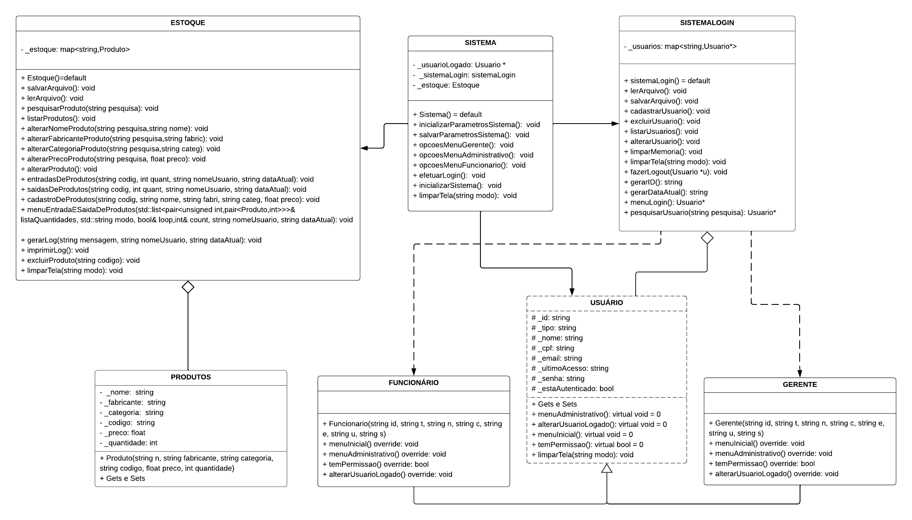

Sistema de Estoque (Perfumaria)
Grupo:
- Yan Figueiras Alves
- Felipe Henrique Ferraz
- Ana Carolina Lima de Souza
- Guilherme Antônio Pascoal
- Pedro de Araújo Cruz
Descrição do sistema:
- O sistema desenvolvido tem como objetivo gerir um estoque (nesse exemplo aplicado a uma perfumaria), e para isso conta com gerentes e funcionários, cada um com diferentes níveis de acesso as funções. Quando iniciado, é preciso fazer login com uma conta pré-cadastrada que ao depender de qual permissão lhe for dada aparecerá um menu diferente. Resumidamente, os funcionários podem apenas alterar sua própria senha, registrar vendas, consultar produtos e listar todos os produtos do estoque, já os gerentes, além de possuirem essas funções, podem controlar o sistema como um todo cadastrando, listando, alterando, removendo produtos e usuários, podem também ver o histórico de movimentações do estoque e registrar compras.
Diagrama de classes:

User Stories:
Como executar e testar o sistema:
Comandos:
- Clonar o repositório:
- Executar o programa:
- 1 -
make: compila todas as classes do sistema.
- 2 -
./main: executa o sistema (deve ser feito na raiz).
- Testar o programa:
- 1 -
make tests: compila todos os testes do sistema, além das classes.
- 2 -
./tester: executa os testes do sistema (deve ser feito na raiz).